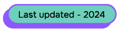

Hey, Hi! i’m Raghav.
Digital product designer
based in London. here you
can see some of the latest
designs and projects

Do you want to rant? Cry? repent? Share a happy
news? Discuss
about a new idea? Want to collaborate and make cool stuffs?
Then, lets
get
on a Quick call send
BOOK A FREE CONSULTATION